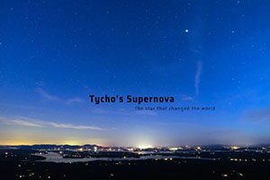
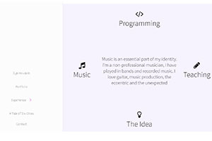
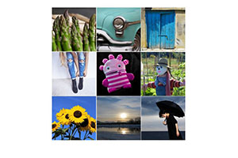
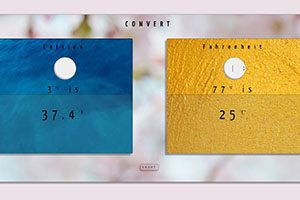
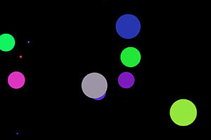
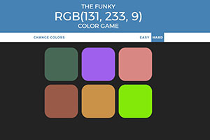
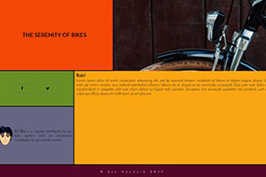
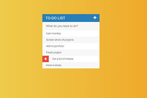
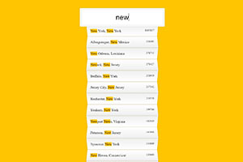

Syk Houdeib @syknapse
Front-end Developer with an eye for the beautiful, modern, and responsive web.
I’m excited by the endless creativity of the web and its constant evolution. I find myself always on the lookout for the latest in front-end technology and the ideas that drive it. I love getting involved in projects, understanding its needs and trying to build beautiful things with the best functionality needed to achieve its goals.
RESPONSIVE
I strive to make my projects work seamlessly on any device; from the smallest mobile to the largest desktop setup
MODERN
Using the latest technology and the most suitable modern approach while maintaining compatibility
DYNAMIC & USABLE
Simple and intuitive, yet fun and enjoyable to use
TECHNOLOGY
HTML5 CSS3 JavaScript
CSS grid/flexbox, Bootstrap, jQuery
I love a challenge and I have a constant urge to learn, discover, and explore. I have been a teacher, a musician, and worked in restaurants, but in programming I have found a deep passion. I would love to hear about your projects and see if we can collaborate on making something good.
Click below if you would like to know more about me and my background

Tycho's Supernova
Tribute to a star that changed the world
Highlights
- Parallax effect
- Visual effects to aid the narrative
- An alternative mobile version
HTML CSS parallax

Interactive portfolio
A project to make a dynamic and interactive page with personal background information
Highlights
- Fully responsive without libraries
- Interactive menu, highlights on select or scroll
- Waypoints that trigger animations and actions on scroll
- Grid design with central 'screen' areas that display info on click
HTML5 CSS3 jQuery CSS grid/flex-box

Dynamic Photo Grid
A photo slide-show done with jQuery and CSS grid
Highlights
- A collaborative project using Github for VC
- Multiple photo panels, dynamic movement
- Slide-show effects done only with jQuery and JavaScript
HTML CSS jQuery grid

Temperature converter
A fully functional, responsive Celsius-Fahrenheit conversion app
Highlights
- Self-initiated and self-directed project
- Background image changes depending on the temperature
- Javascript logic converts to a single decimal, and limits input
- A reset button
- Responsive to any device size
HTML CSS parallax

Patatap clone
A clone of patatap.com, pressing the letters on the keyboard produces sounds and animations
Highlights
- Vanilla JS logic
- Uses Peper.js & Howler.js
- Color changing circles and a sound for each keyboard letter
- Animated circles appear at a random location on the visible screen
JavaScript

RGB Color Guessing Game
Guess the color that corresponds to the RGB code. A fully playable colour guessing game
Highlights
- Vanilla js logic: randomly select an RGB code, generate random colors to choose from, recognise correct answer and change colors
- Easy and hard modes
- Reset and change colors options
JavaScript

Responsive grid
An experiment in using CSS grid to create highly responsive layouts with ease and flexibility
Highlights
- A self-initiated project to explore the possibilities of CSS3 grid
- A grid and flexbox design with three different responses to screen size
- A completely independent grid set-up for each screen size
CSS grid HTML

To-do List
A to-do list that allows adding new items, crossing off, and deleting items
Highlights
- Grab information from user input dynamically
- Add this information to a list
- Show a hidden delete icon on hover
- Delete, cross off, and add item functions
JavaScript
Clock
A working javascript clock with CSS design
Highlights
- JS ES6 features
- Analog-style hands using JS controlled CSS animations
JavaScript ES6

City/state search
Type-ahead search by US city or state name, see population
Highlights
- An exercise in search functions
- Shows results as user types, highlighting typed letters
- Ajax, API, JSON
- Filtering, mapping, pushing, Regex,
JavaScript ES6